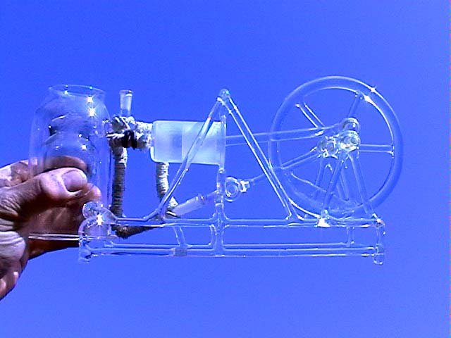
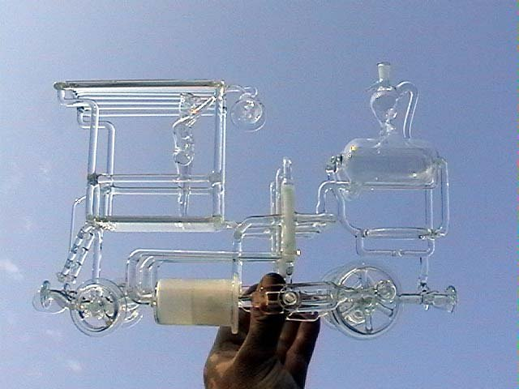
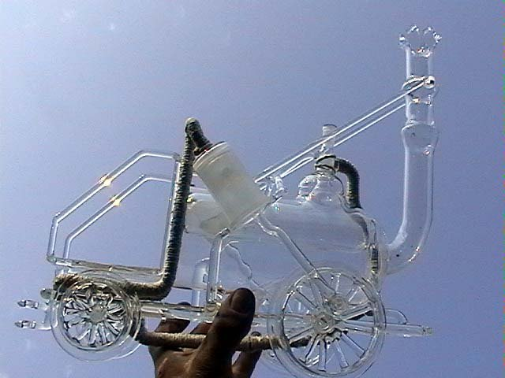
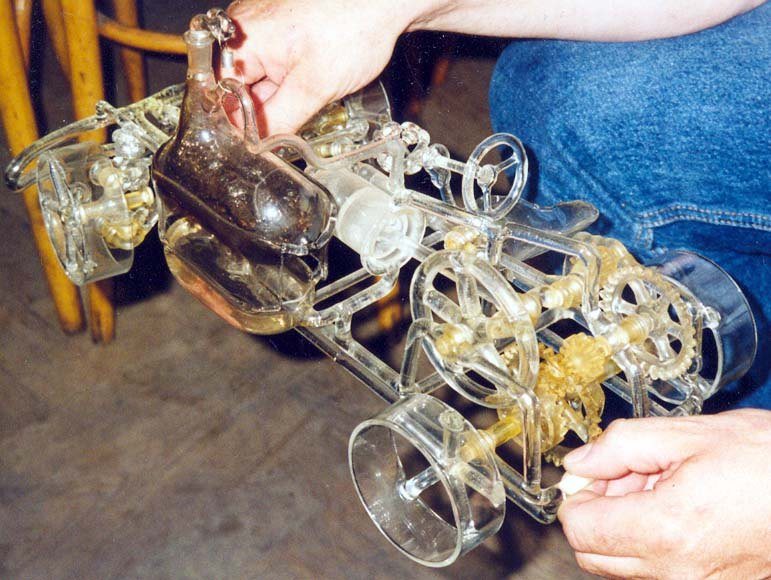
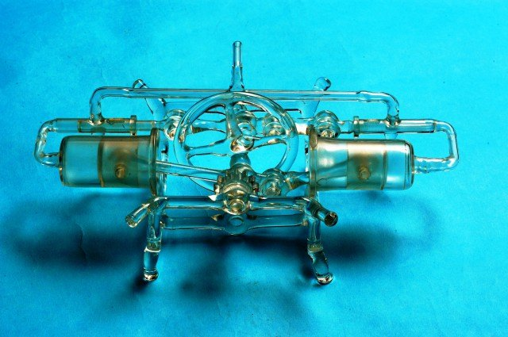
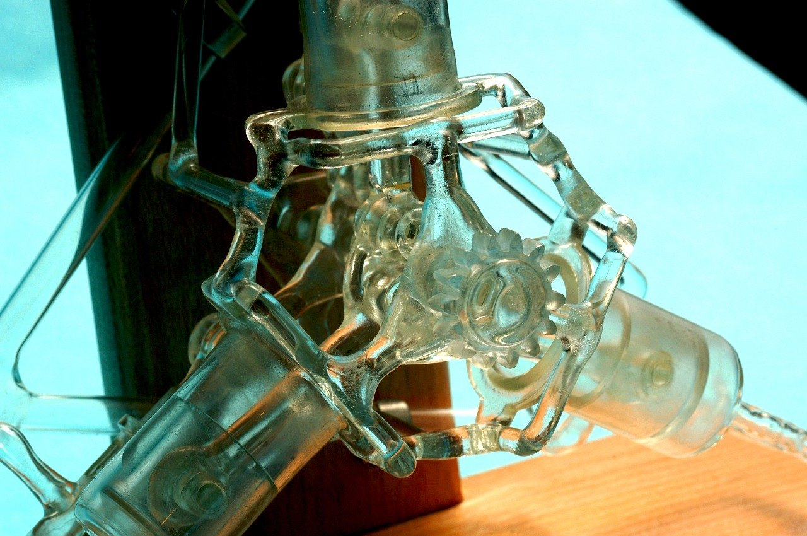
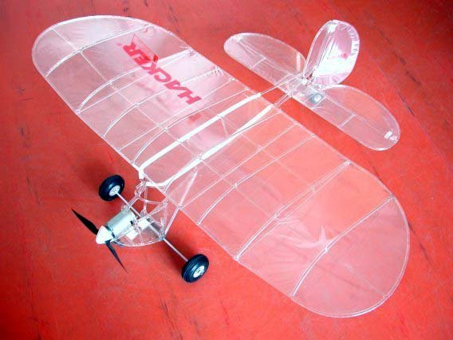
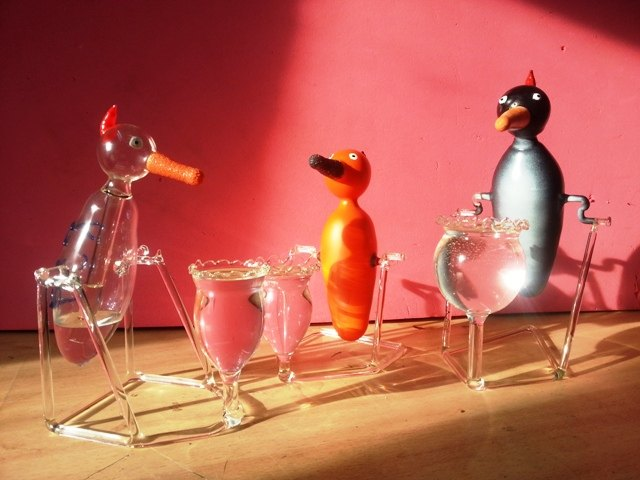

Na podzim roku 1991 jsem si začal hrát s konstrukcí pohyblivých skleněných modelů. Na rozdíl od klasické výroby laboratorního skla vyžaduje tato činnost hledání nových postupů při výrobě a zejména pak při přípravě různých přípravků, bez kterých se neobejdu.
Dnes mám plné šuple různého speciálního nářadí, od jednoduchých držáčků z duralu, pertinaxu, grafitu a podobně, až po poměrně složité grafitové tvarovací kleště a diamantové brusné nástroje. O jejich výrobě se zmiňuji v sekci Mé sklářské začátky. Dá se říci, že vymýšlení a výroba přípravků zabrala na některých modelech až 5× více času než samotná výroba. Jedinou výhodou ale je, že se ve většině případů dají použít i k výrobě dalších částí při konstrukci jiných modelů.
 01První, jednoválcový parní strojJednočinný parní stroj — můj první skleněný model.
01První, jednoválcový parní strojJednočinný parní stroj — můj první skleněný model.
02Druhý, jednoválcový parní strojVětší setrvačník, diamantem vybroušený válec. Běží i na páru.
03Tříválcová lokomotivaTři válce po 120° a zcela originální pohon šoupat.
04Stephensonova lokomotivaLokomotiva z roku 1829 pro rozchod 127 mm. Český rekord.
05AutoNejdřív na elektromotor, pak na páru. Diferenciál ze skla.
06BoxerMotor pro parní auto, který běží jako zdivočelé Kango.
07HvězdiceHvězdicový motor — osobně ho považuji za své vrcholné dílo. 08Čtyřválcový řadový motorKlikovka osmkrát zalomená. Vznikl v únoru 2015.
08Čtyřválcový řadový motorKlikovka osmkrát zalomená. Vznikl v únoru 2015.
09LetadloRozpětí 1 m, let 7. června 2000 v Rakovníku. Český rekord.
10VšehochuťSkleněná pružina a pijící čáp, kterému říkám „Kejvák“.